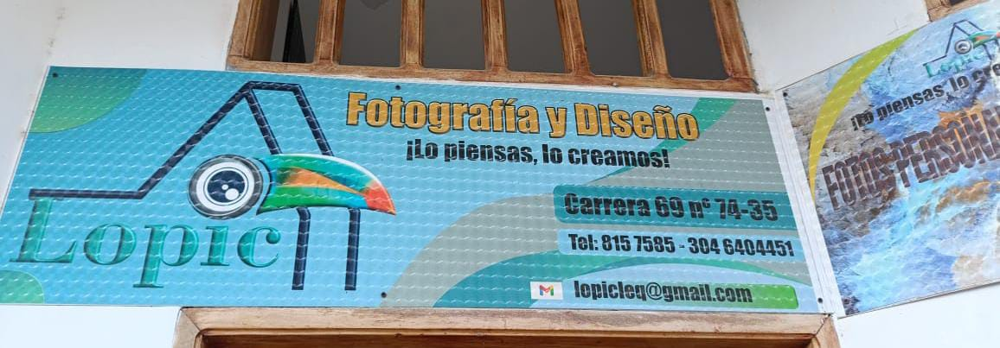

¿Quienes Somos?
!Hola, Bienvenidos Somos LOPIC¡

En Lopic, somos una Empresa especializada en fotografía y publicidad, dedicada a capturar momentos únicos y convertir ideas en estrategias visuales que conectan con el público. Ofrecemos soluciones creativas y personalizadas que reflejan la esencia de cada cliente, combinando técnica, arte y un enfoque innovador para destacar en un mercado competitivo."

En Lopic, somos una empresa comprometida con ofrecer soluciones integrales en fotografía, publicidad y papelería, adaptadas a las necesidades de nuestros clientes.
Nos especializamos en capturar momentos únicos y crear imágenes impactantes que transmiten emociones, mientras diseñamos campañas publicitarias estratégicas que posicionan tu marca en un mercado competitivo. Además, contamos con un completo servicio de papelería y fotocopias, equipado con herramientas modernas para garantizar impresiones de alta calidad y soluciones prácticas para tus proyectos personales o empresariales.
Nuestro equipo, apasionado y profesional, trabaja con dedicación para brindar resultados innovadores, funcionales y con un enfoque personalizado, asegurándonos de que cada detalle refleje la esencia y visión de nuestros clientes. En Lopic, más que un servicio, ofrecemos experiencias que inspiran y generan conexiones duraderas.